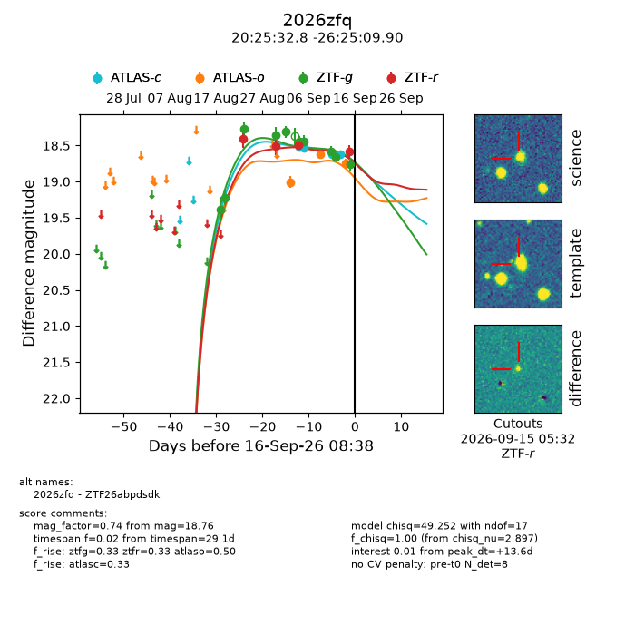
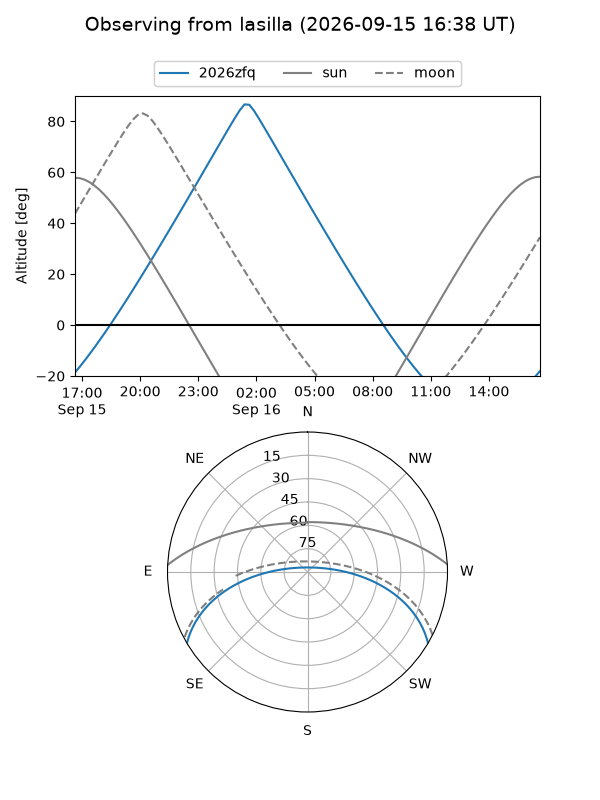
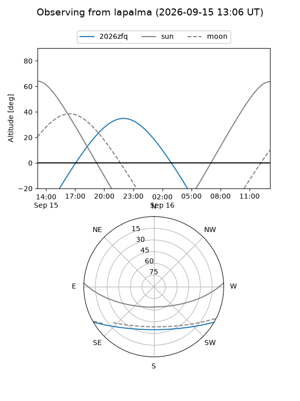
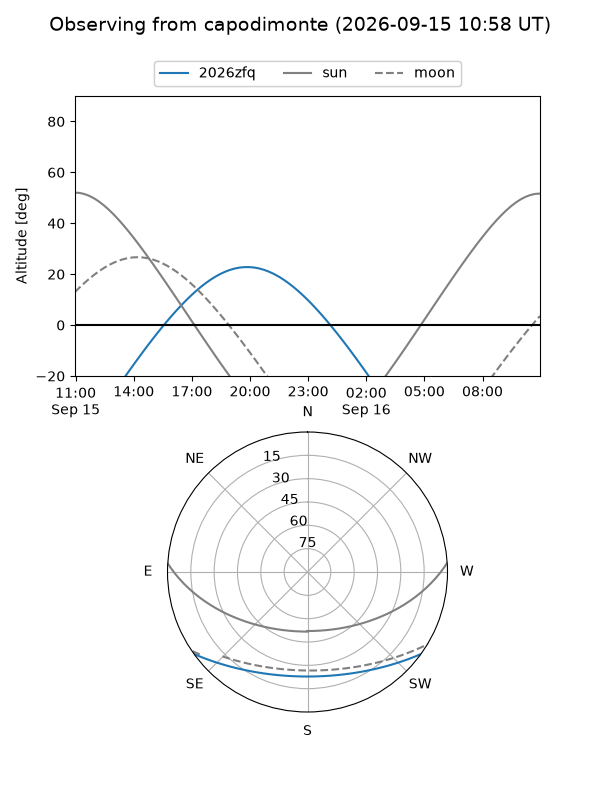
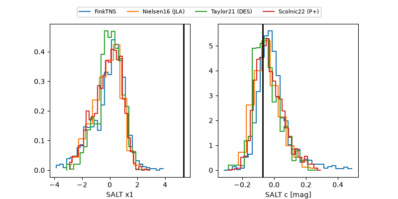

2026zfq
Target 2026zfq at 2026-09-16 08:40
Aliases and brokers:
FINK-ZTF: ztf.fink-portal.org/ZTF26abpdsdk
Lasair-ZTF: lasair-ztf.lsst.ac.uk/objects/ZTF26abpdsdk
ALeRCE-ZTF: alerce.online/object/ZTF26abpdsdk
YSE-PZ: ziggy.ucolick.org/yse/transient_detail/2026zfq
TNS name: wis-tns.org/object/2026zfq
Direct TNS query: direct search
alt names
ZTF26abpdsdk (ztf,fink_ztf)
2026zfq (tns,yse)
Coordinates:
equatorial (ra, dec) = 306.3867,-26.41942
equatorial (HMS+DMS) = 20:25:32.81,-26:25:09.90
galactic (l, b) = (17.0914,-31.40276)
Flags:
TNS type: nan
peak dt: +13.6
Photometry:
last atlasc=18.62, atlaso=18.74, ztfg=18.76, ztfr=18.59
4 atlasc, 3 atlaso, 10 ztfg, 4 ztfr detections
Lightcurve

Visibility



Additional plots
